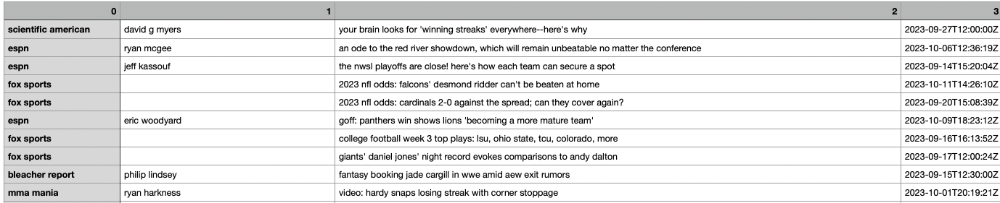

---
title: "Data Cleaning"
format: html
toc: true
toc_depth: 3
number sections: true
code-fold: show
---Baseballr
*Disclaimer - this section is a work in progress
This page shows the raw data, the code used to clean it, and the modified data. It’s a journal of my data cleaning process. Please be aware that this page contains both Python and R code, thus you should avoid running the source code all at once.
ncaahoopR
let’s clean the Villanova 2021-22 data with R:
here is a screen shot of the first few rows and columns of the raw data:

library(tidyverse)-- Attaching core tidyverse packages ------------------------ tidyverse 2.0.0 --
v dplyr 1.1.2 v readr 2.1.4
v forcats 1.0.0 v stringr 1.5.0
v ggplot2 3.4.2 v tibble 3.2.1
v lubridate 1.9.2 v tidyr 1.3.0
v purrr 1.0.1
-- Conflicts ------------------------------------------ tidyverse_conflicts() --
x dplyr::filter() masks stats::filter()
x dplyr::lag() masks stats::lag()
i Use the conflicted package (<http://conflicted.r-lib.org/>) to force all conflicts to become errors# let's load in the data
nova2122 <- read.csv('./data/raw_data/villanova2122.csv')# let's check the shape of the data
dim(nova2122)- 11405
- 39
# what are the column names?
colnames(nova2122)- 'game_id'
- 'date'
- 'home'
- 'away'
- 'play_id'
- 'half'
- 'time_remaining_half'
- 'secs_remaining'
- 'secs_remaining_absolute'
- 'description'
- 'action_team'
- 'home_score'
- 'away_score'
- 'score_diff'
- 'play_length'
- 'scoring_play'
- 'foul'
- 'win_prob'
- 'naive_win_prob'
- 'home_time_out_remaining'
- 'away_time_out_remaining'
- 'home_favored_by'
- 'total_line'
- 'referees'
- 'arena_location'
- 'arena'
- 'capacity'
- 'attendance'
- 'shot_x'
- 'shot_y'
- 'shot_team'
- 'shot_outcome'
- 'shooter'
- 'assist'
- 'three_pt'
- 'free_throw'
- 'possession_before'
- 'possession_after'
- 'wrong_time'
# this data looks relatively clean, but we want only shooting data
# let's get rid of rows where there isn't a shooter
# this would be rows where the shooter is NA
# such as a turnover, steal, rebound, or block
nova2122 <- nova2122 %>%
filter(!is.na(shooter))
# let's check the shape of the data
dim(nova2122)- 5399
- 39
# we can see that we removed about 5,000 rows and are left with just a little over half the initial data
# I want to create a previous_shots column that says how many shots the shooter has made or missed in a row before the current shot they are taking
sample <- nova2122 %>% select(game_id, play_id, half, shooter, shot_outcome)
sample <- sample %>%
mutate(
shot_outcome_numeric = ifelse(shot_outcome == "made", 1, -1)
)
sample <- sample %>%
group_by(game_id, half, shooter) %>%
arrange(play_id) %>%
mutate(
shot_sequence = cumsum(shot_outcome_numeric)) %>%
ungroup()
sample3 <- sample %>%
mutate(
shot_sequence = ifelse(shot_outcome == "made" & shot_sequence <= 0, 1,
ifelse(shot_outcome == "missed" & shot_sequence >= 0, -1, shot_sequence))
)
sample3 <- sample3 %>%
group_by(game_id, half, shooter) %>%
arrange(play_id) %>%
mutate(
previous_shots = ifelse(row_number() == 1, 0, lag(shot_sequence, default = 0))
) %>%
ungroup()
write.csv(sample3, file = "./data/modified_data/nova2122.csv", row.names = FALSE)Here is a screen shot of the modified data:

newsapi
let’s clean this using python:
here is a picture of the first few rows of the raw data:

import pandas as pd
import numpy as np
from sklearn.feature_extraction.text import CountVectorizer#reading in the file
newsapi = pd.read_csv('./data/raw_data/newsapi.csv')# what is the shape of this data
newsapi.shape(100, 4)# what are the column names
newsapi.columnsIndex(['0', '1', '2', '3'], dtype='object')import nltk
nltk.download('stopwords')
nltk.download('wordnet')
nltk.download('omw-1.4')[nltk_data] Downloading package stopwords to
[nltk_data] /Users/williammcgloin/nltk_data...
[nltk_data] Package stopwords is already up-to-date!
[nltk_data] Downloading package wordnet to
[nltk_data] /Users/williammcgloin/nltk_data...
[nltk_data] Package wordnet is already up-to-date!
[nltk_data] Downloading package omw-1.4 to
[nltk_data] /Users/williammcgloin/nltk_data...Trueimport re
from nltk.corpus import stopwords
from nltk.stem import WordNetLemmatizer
# Initialize the Lemmatizer and stopwords list
lemmatizer = WordNetLemmatizer()
stop_words = set(stopwords.words('english'))
def preprocess_text(text):
# Remove special characters and numbers
text = re.sub(r'[^a-zA-Z]', ' ', text)
# Tokenization and lowercase
words = text.lower().split()
# Remove stopwords and apply lemmatization
words = [lemmatizer.lemmatize(word) for word in words if word not in stop_words]
return ' '.join(words)
# Apply preprocessing to the 'text' column
newsapi['cleaned_text'] = newsapi['2'].apply(preprocess_text)# Initialize the CountVectorizer
count_vectorizer = CountVectorizer()
# Fit and transform the preprocessed text data
X = count_vectorizer.fit_transform(newsapi['cleaned_text'])
# printing part of the sparse matrix
print(X[:20, :20].toarray())[[0 0 0 0 0 0 0 0 0 0 0 0 0 0 0 0 0 0 0 0]
[0 0 0 0 0 0 0 0 0 0 0 0 0 0 0 0 0 0 0 0]
[0 0 0 0 0 0 0 0 0 0 0 0 0 0 0 0 0 0 0 0]
[0 0 0 0 0 0 0 0 0 0 0 0 0 0 0 0 0 0 0 0]
[0 0 0 0 0 0 0 0 0 0 0 0 0 0 0 0 0 0 0 0]
[0 0 0 0 0 0 0 0 0 0 0 0 0 0 0 0 0 0 0 0]
[0 0 0 0 0 0 0 0 0 0 0 0 0 0 0 0 0 0 0 0]
[0 0 0 0 0 0 0 0 0 0 0 0 0 0 1 0 0 0 0 0]
[0 0 0 0 0 0 1 0 0 0 0 0 0 1 0 0 0 0 0 0]
[0 0 0 0 0 0 0 0 0 0 0 0 0 0 0 0 0 0 0 0]
[0 0 0 0 0 0 0 0 0 0 0 1 0 0 0 0 0 0 0 0]
[0 0 0 0 0 0 0 0 0 0 0 0 0 0 0 0 0 0 0 1]
[0 0 0 0 0 0 0 0 0 0 0 0 0 0 0 0 0 0 0 0]
[0 0 0 0 0 0 0 0 0 0 0 0 0 0 0 0 0 0 0 0]
[0 0 0 0 0 0 0 0 0 0 0 0 0 0 0 0 0 0 0 0]
[0 0 0 0 0 0 0 0 0 0 0 0 0 0 0 0 0 0 0 0]
[1 0 0 0 0 0 0 0 0 0 0 0 0 0 0 0 0 0 0 0]
[0 0 0 0 0 0 0 0 0 0 0 0 0 0 0 0 0 0 0 0]
[0 0 0 0 0 0 0 0 0 0 0 0 0 0 0 0 0 0 0 0]
[0 0 0 0 0 0 0 0 0 1 0 0 0 0 0 0 1 0 0 0]]# Convert the sparse matrix to a Pandas DataFrame
X_df = pd.DataFrame(X.toarray())
# Display the first few rows of the DataFrame
print(X_df.head()) 0 1 2 3 4 5 6 7 8 9 ... 539 540 541 542 \
0 0 0 0 0 0 0 0 0 0 0 ... 0 0 0 0
1 0 0 0 0 0 0 0 0 0 0 ... 0 0 0 0
2 0 0 0 0 0 0 0 0 0 0 ... 0 0 0 0
3 0 0 0 0 0 0 0 0 0 0 ... 0 0 0 0
4 0 0 0 0 0 0 0 0 0 0 ... 0 0 0 0
543 544 545 546 547 548
0 0 0 0 0 0 0
1 0 0 0 0 0 0
2 0 0 0 0 0 0
3 0 0 0 0 0 0
4 0 0 0 0 0 0
[5 rows x 549 columns]vocab = count_vectorizer.get_feature_names_out()
print(vocab)['abnormality' 'abound' 'ac' 'acc' 'action' 'advice' 'aew' 'ahead' 'al'
'alds' 'alert' 'already' 'alyssa' 'amid' 'andy' 'angelos' 'another'
'answer' 'apple' 'argentina' 'arizona' 'arkansas' 'armondo' 'arsenal'
'astonishing' 'austin' 'back' 'balogun' 'ban' 'baseball' 'battle' 'bear'
'bearcat' 'beat' 'beaten' 'become' 'becoming' 'behind' 'belief'
'bellingham' 'bengal' 'besides' 'best' 'bet' 'better' 'beyond' 'big'
'biggs' 'bird' 'blount' 'blue' 'blunder' 'bonus' 'booing' 'booking'
'boston' 'bottom' 'brad' 'brain' 'brave' 'breaking' 'breanna' 'brewer'
'buccaneer' 'building' 'bukayo' 'bumper' 'call' 'candidate' 'cant' 'card'
'cardinal' 'cargill' 'carlos' 'case' 'casino' 'catch' 'central' 'cfb'
'champion' 'charge' 'chicago' 'christian' 'cincinnati' 'city' 'climate'
'clinch' 'close' 'closer' 'clue' 'clutch' 'coach' 'coaching'
'cockeysville' 'college' 'colorado' 'column' 'come' 'coming' 'commander'
'commits' 'comparison' 'complete' 'concern' 'conference' 'contender'
'corner' 'could' 'cover' 'coverage' 'cowboy' 'cpa' 'craziness' 'crazy'
'crop' 'crowd' 'cub' 'cup' 'dalton' 'dame' 'daniel' 'david' 'debut'
'defense' 'deion' 'delight' 'deserved' 'desmond' 'desperate' 'despite'
'division' 'dolphin' 'doubleheader' 'draw' 'driven' 'drought' 'duck'
'duke' 'dy' 'eagle' 'earns' 'eberflus' 'edge' 'emerges' 'end' 'enter'
'episode' 'er' 'europe' 'evaluation' 'even' 'event' 'ever' 'everywhere'
'evokes' 'excited' 'exit' 'expert' 'eye' 'fact' 'fade' 'falcon' 'famu'
'fantasy' 'father' 'favored' 'favorite' 'fiba' 'field' 'fighter'
'fighting' 'final' 'fire' 'fired' 'first' 'five' 'fix' 'fiziev' 'fizzle'
'florida' 'flyweight' 'focus' 'folarin' 'football' 'force' 'form' 'found'
'franklin' 'game' 'gamrot' 'gen' 'giant' 'goal' 'god' 'goff' 'going'
'good' 'got' 'grade' 'grasso' 'guez' 'ham' 'hardy' 'harsh' 'head' 'heat'
'heavily' 'here' 'hero' 'highlight' 'hit' 'home' 'honor' 'hot' 'huge'
'hurricane' 'hype' 'image' 'infamous' 'injures' 'issue' 'ja' 'jack'
'jade' 'jay' 'jet' 'jimmy' 'john' 'join' 'jones' 'journey' 'jr' 'jude'
'julio' 'justin' 'kansa' 'keep' 'kelce' 'key' 'king' 'knee' 'knockout'
'larger' 'laugh' 'leaf' 'league' 'learned' 'life' 'line' 'lion' 'lionel'
'live' 'livestream' 'locked' 'lofty' 'logan' 'look' 'loose' 'loser'
'loses' 'losing' 'loss' 'lsu' 'lucas' 'madrid' 'mailbag' 'main' 'make'
'makeover' 'man' 'manager' 'manchester' 'marquee' 'maryland' 'match'
'mateusz' 'matt' 'matter' 'mature' 'meeting' 'megan' 'messi' 'miami'
'middleweight' 'milan' 'mlb' 'mojo' 'moment' 'monday' 'morning' 'move'
'must' 'mvp' 'nailed' 'napoli' 'nbas' 'near' 'network' 'new' 'newcastle'
'nfl' 'night' 'noche' 'normal' 'notify' 'notre' 'nowhere' 'number' 'nwsl'
'nycs' 'nz' 'odds' 'ode' 'offense' 'ohio' 'oklahoma' 'onuachu' 'opponent'
'option' 'oregon' 'oriole' 'padre' 'panther' 'pass' 'pat' 'patriot'
'penn' 'penultimate' 'perfect' 'peter' 'phillies' 'philly' 'pick'
'pirate' 'play' 'player' 'playing' 'playoff' 'plenty' 'plus' 'point'
'politics' 'pool' 'pound' 'power' 'prediction' 'pretender' 'preview'
'previewing' 'problem' 'prop' 'provides' 'pulisic' 'purdy' 'question'
'race' 'racer' 'racing' 'rafael' 'ram' 'ranger' 'ranking' 'rapinoe' 'ray'
'read' 'real' 'recap' 'record' 'recruit' 'red' 'regular' 'reign' 'relish'
'remain' 'removed' 'report' 'resident' 'retro' 'return' 'review' 'revved'
'ridder' 'ripe' 'rise' 'river' 'rock' 'rodon' 'rodr' 'rome' 'ross'
'rumor' 'run' 'running' 'ryder' 'saka' 'sander' 'say' 'schedule' 'score'
'sean' 'search' 'season' 'seat' 'sec' 'secure' 'sends' 'sept' 'series'
'served' 'shadow' 'shanahan' 'shevchenko' 'shift' 'show' 'showdown'
'since' 'skid' 'slate' 'smack' 'snap' 'sold' 'someone' 'sooner' 'sox'
'special' 'speed' 'spiro' 'sport' 'spot' 'spotlight' 'spread' 'st'
'stamp' 'stand' 'star' 'start' 'starting' 'state' 'station' 'stats'
'stay' 'stellar' 'stewart' 'stoppage' 'straight' 'strategy' 'streak'
'stream' 'strickland' 'struggling' 'success' 'summer' 'survivor'
'suwinski' 'suzuki' 'sv' 'sweep' 'swift' 'tailspin' 'take' 'takeaway'
'taking' 'tale' 'talking' 'tape' 'taylor' 'tcu' 'team' 'ten' 'test'
'texas' 'theater' 'thing' 'think' 'thirteen' 'thomas' 'thought' 'three'
'thriller' 'thursday' 'tight' 'time' 'title' 'tko' 'tnf' 'today' 'tom'
'top' 'total' 'tournament' 'trail' 'transformation' 'travis' 'trea'
'trojan' 'troy' 'trust' 'trying' 'tssaa' 'turkey' 'turner' 'tv' 'twin'
'two' 'ucf' 'ufc' 'unbeatable' 'unbeaten' 'united' 'unsung' 'upset'
'upside' 'usc' 'usmnt' 'uwf' 'vega' 'veloudos' 'video' 'view' 'vlad'
'wagon' 'warm' 'watch' 'watching' 'week' 'weekend' 'welcome' 'well'
'went' 'white' 'whitner' 'wild' 'wildcat' 'williams' 'wilson' 'win'
'winner' 'winning' 'wnba' 'woman' 'world' 'wr' 'wrong' 'wwe' 'yahoo'
'yankee' 'year' 'yet' 'youth']individual player data
let’s clean the aaron judge game data with python:
here is a screen shot of the first few rows of the raw data:

import pandas as pd
import numpy as np#reading in the file
aaronjudge = pd.read_csv('./data/raw_data/AaronJudgeData.csv')#how many rows are in this dataset?
aaronjudge.shape(111, 37)#what are the column names?
aaronjudge.columnsIndex(['Date', 'Team', 'Opp', 'BO', 'Pos', 'PA', 'H', '2B', '3B', 'HR', 'R',
'RBI', 'SB', 'CS', 'BB%', 'K%', 'ISO', 'BABIP', 'EV', 'AVG', 'OBP',
'SLG', 'wOBA', 'wRC+', 'Date.1', 'Team.1', 'Opp.1', 'BO.1', 'Pos.1',
'Events', 'EV.1', 'maxEV', 'LA', 'Barrels', 'Barrel%', 'HardHit',
'HardHit%'],
dtype='object')#removing the repeated columns
columns_to_remove = ['Date.1', 'Team.1', 'Opp.1', 'BO.1', 'Pos.1']
aaronjudge.drop(columns=columns_to_remove, inplace=True)
aaronjudge.columnsIndex(['Date', 'Team', 'Opp', 'BO', 'Pos', 'PA', 'H', '2B', '3B', 'HR', 'R',
'RBI', 'SB', 'CS', 'BB%', 'K%', 'ISO', 'BABIP', 'EV', 'AVG', 'OBP',
'SLG', 'wOBA', 'wRC+', 'Events', 'EV.1', 'maxEV', 'LA', 'Barrels',
'Barrel%', 'HardHit', 'HardHit%'],
dtype='object')# i belive the initial row with the column names is repeated throughou the data. let's check
print((aaronjudge['Date'] == 'Date').sum())5# let's remove these rows and then check the shape again
aaronjudge.drop(aaronjudge[aaronjudge['Date'] == 'Date'].index, inplace=True)
aaronjudge.shape(106, 32)# there is also a total row which I want to remove as well. let's do that now
aaronjudge.drop(aaronjudge[aaronjudge['Date'] == 'Total'].index, inplace=True)
aaronjudge.shape(105, 32)# so far, I have removed 6 rows and 5 columns.
# I want to create a "location" column based on the "@" in the "Opp" column
aaronjudge['location'] = aaronjudge['Opp'].apply(lambda x: 'away' if '@' in x else 'home')
# Remove the "@" symbol from the values in the "Opp" column
aaronjudge['Opp'] = aaronjudge['Opp'].str.replace('@', '')
# check value counts of the new "location" column
print(aaronjudge['location'].value_counts()) #this seems accuratehome 53
away 52
Name: location, dtype: int64print(aaronjudge['PA'].dtype)
print(aaronjudge['BB%'].dtype)object
object# I want to create two new columns. The number of at bats per each game and the number of hard hits in each game.
# for this project, we are going to calculate at-bats as should be the number of plate appearances minus walks (sacrifices and HBP are not included in this dataset)
#first i have to remove the '%' symbol and convert 'BB%' to a float
aaronjudge['BB%'] = aaronjudge['BB%'].astype(str)
aaronjudge['BB%'] = aaronjudge['BB%'].str.rstrip('%').astype(float) / 100.0
# Round the 'BB%' column to three decimal places
aaronjudge['BB%'] = aaronjudge['BB%'].round(3)
#print(aaronjudge['BB%'].mean())
#convert 'PA' to a float
aaronjudge['PA'] = aaronjudge['PA'].astype(float)
# now I can create the new at_bats column
aaronjudge['at_bats'] = aaronjudge['PA'] * (1 - aaronjudge['BB%'])
#now lets see the average number of at bats vs the average number of plate appearances
print(aaronjudge['at_bats'].mean())
print(aaronjudge['PA'].mean())3.4857333333333336
4.314285714285714# now I want to create a new column for hard hits per game
# we can do this by multiplying the hard hit percentage by the events column (these columns were part of a different table that was merged with the original table)
print(aaronjudge['HardHit%'].dtype)
print(aaronjudge['Events'].dtype)object
object# this code is very similar to what we just did
#first i have to remove the '%' symbol and convert 'HardHit%' to a float
aaronjudge['HardHit%'] = aaronjudge['HardHit%'].astype(str)
aaronjudge['HardHit%'] = aaronjudge['HardHit%'].str.rstrip('%').astype(float) / 100.0
# Round the 'HardHit%' column to three decimal places
aaronjudge['HardHit%'] = aaronjudge['HardHit%'].round(3)
#print(aaronjudge['HardHit%'].mean())
#convert 'Events' to a float
aaronjudge['Events'] = aaronjudge['Events'].astype(float)
# now I can create the new hard_hits column
aaronjudge['hard_hits'] = (aaronjudge['Events'] * aaronjudge['HardHit%']).round(0)
#now lets see the average number of hard_hits per game
print(aaronjudge['hard_hits'].mean())1.52# finally, let's create a correct hardhit% column that is based on the number of at-bats, not the number of times a player puts the ball in play
aaronjudge['correct_hardhit%'] = (aaronjudge['hard_hits'] / aaronjudge['at_bats']).round(2)
# now let's see the average correct hardhit% for Aaron Judge
print(aaronjudge['correct_hardhit%'].mean())0.42829999999999996# sometimes in certain stadiums or based on the weather, the HardHit% data is missing
# this causes the value of the new correct_hardhit% column to be NaN, so let's remove those few rows
aaronjudge.dropna(subset=['correct_hardhit%'], inplace=True)
#let's check the shape again
aaronjudge.shape #loss of 5 rows(100, 36)# now we can save this to a csv file
aaronjudge.to_csv('./data/modified_data/aaronjudge.csv', index=False)here is a screenshot of the first couple rows of the modified csv file:

Extra Joke
What did the broom say to the vacuum?
“I’m so tired of people pushing us around.”